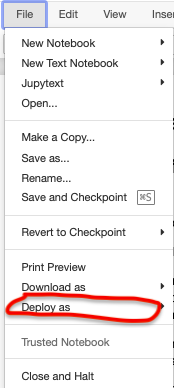
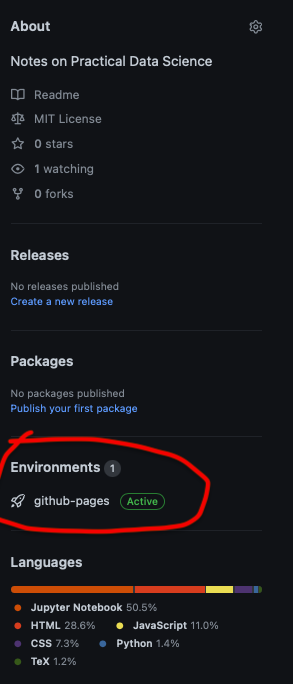

This article was written on Jupyter Notebook
Contents
This article was written on Jupyter Notebook¶
A brief introduction to jupyter-book and jupyter_to_medium¶
For the longest time, I’ve kept notes locally on Apple Pages. To that end, I have no complaints. Pages is an amazing piece of software that allows you to quickly produce high quality documents (with really great diagrams and tables) in a fraction of the time it would take on Overleaf, Word or Google Docs.
However, there have been a couple of things that have always annoyed me about it:
Versionining is not possible
The documents cannot be easily shared
Documenting code is really hard
These aren’t unique to Pages either. Word, Docs and Overleaf suffer from the same problems for the most part. None of these tools are great for continuously updating shared notes, creating documentation or incorporating code.
The good news is that I’ve recently learnt how to use two new Python libraries that are going to help me greatly accelerate my notetaking and article writing. These are jupyter-book and jupyter_to_medium.
In this article (which I happen to be writing on a Jupyter Notebook!) I will explain how you can use both tools to accelerate notetaking and writing articles.
What is jupyter_to_medium?¶
jupyter_to_medium is a Python package that allows you to directly deploy your Jupyter Notebook articles to Medium. This is useful if you typically base most of your articles on content from Jupyter Notebooks. I’ve been curious about this package for a while, but I’ve only just gotten round to experimenting with it… let’s see what it can do! If things go well I may strongly consider using it as the main source of my articles.
Installation¶
%%capture
# install jupyter_to_medium
!pip install jupyter_to_medium
For most people, doing this should give you access to a ‘deploy’ button under File within your Jupyter notebook.
If not (like in my case) then you need to run jupyter bundlerextension enable --py jupyter_to_medium._bundler --sys-prefix.

Now you can use this to deploy your notebook to Medium. There are some options on how images are to be compressed, ands whether you want your code converted to gists. For this article, I’ve just used the default options to see what the outcome is like.
Tests on Jupyter to Medium¶
I want to see what the compression for maths formulas looks like…
Numpy arrays
import numpy as np
np.array([1,2,3,4])
array([1, 2, 3, 4])
Command line logs
!echo "TESTING"
TESTING
What is jupyter-book?¶
jupyter-book is a package that allows you to easily produce book like documents using markdown files and jupyter notebook files. For this reason, they are extremely flexible, and can allow you to quickly generate rich documents in a really short time. What’s more, they can be integrated with GitHub Actions to enable CI/CD behaviour. If you are looking for a quick intallation of jupyter-book without any CI/CD features, just run:
%%capture
# install jupyter-book
!pip install jupyter-book
# create a book
!jupyter-book create your_book_name
This creates a book with the name your_book_name if your current working directory. The directory structure looks something like this:
your_book_name:
- _config.yml
- _toc.yml
- intro.md
- logo.png
- markdown.md
- notebooks.ipynb
- references.bib
- requirements.txt
You can now work on your book by editing the .md or .ipynb files! You can even add your own files. Remember that the _toc.yml files contains the structure of your book, so make sure any books added there are correctly referenced.
For more, visit the jupyter-book official documentation here.
Note that the %%capture magic command is added to prevent the installation outputs from being printed.
Installation using cookiecutter¶
My preferred way of installing jupyter-book is through cookiecutter. This method comes with extra files that interface with GitHub Actions to enable CI/CD on the project. To install using this method, first make sure you have cookiecutter installed:
%%capture
# install cookiecutter
!pip install -U cookiecutter
Then, use the following cookiecutter command to download the latest jupyter-book configuration:
%%capture
!cookiecutter git@github.com:executablebooks/cookiecutter-jupyter-book.git
This then allows you to add some metadata about your project, such as the title, the author name, the license etc. In particular, I want to bring your attention to book_slug and select include_ci_files. For the former, it is the name of your project for download purposes, e.g. if you wanted to run pip install project. I have not used this feature yet, however I’m mentioning it in case you are interested in learning more about it. See this GitHub issue for a thread on what a slug is in cookiecutter.
The more interesting tag is select include_ci_files. Selecting 1 will download CI/CD configurations for GitHub (whereas 2 will download that for GitLab). I’ll be going through what this does for GitHub.
CI/CD files¶
Cookiecutter automatically adds a hidden folder called .github which contains a .yml file workflows/deploy.yml. It’s contents are used by GitHub to trigger tests and deployments when you make changes to your project. By default, it is configured to look for changes to your main branch on GitHub. If changes are detected, then it runs some tests on an ubuntu environment with a specified version of Python. These include dependency installation (e.g. from requirements.txt) and also which folders to monitor for new builds of your project.
# test import pandas
try:
import pandas
print('Pandas import successful.')
except:
print('Pandas import failed.')
Pandas import failed.
Since I am running locally, I see ‘Pandas import failed.’ above, because I’m in an environment that is not using Pandas. However, the requirements file for the project does have pandas in it. This means that the published version of this page (see here). Should actually output a different message.
Pushing to GitHub¶
In order to publish your notebook to GitHub, first activate GitHub pages by following instructions here. Once that’s done, you’ll have a repository {your_github_username}.github.io that points to a webpage with that same name. Now, any new project you create can have a webpage associated with it at {your_github_username}.github.io/project_name.
You can thus host your book on GitHub under a project name. So, create a new repository for your project, then push all of the files within your_book_name (note: not the one created earlier, but rather the one created using cookiecutter) to it. On the GitHub repo, make sure you create an empty gh-pages branch (this is branch that GitHub actions will push the contents of your book to), and to point the location of your project GitHub pages to this branch (this can be done by going into your project repo settings, then into pages and then enabling the feature and pointing the directory to gh-pages root).
Making Changes¶
Once your project is linked to GitHub, any new commits to the project will trigger the GitHub action. This will automatically run some tests on GitHub.
On your latest commit, you’ll be able to see an orange dot that indicates that tests are being run. After this is complete, you will either get a cross or a tick.
This indicates whether the test was successful or not. If not, you will need to look into the logs of the test. Remember that the details of the tests run are found in .github/workflows/deploy.yml so it’s always a good to start there.
If successful, then your project will be deployed on GitHub pages! You can see on the side of your repository for the latest build and visit it from there:

Thoughts and Takeaways¶
Jupyter to Medium¶
Personally, I don’t usually write my articles from Jupyter Notebooks. I really like the clear split of running expeirments on Jupyter (or usually just Python) and then writing an article with a clear narrative in mind in order to make it appealing to the reader. As such, I don’t think I’ll be using jupyter_to_medium much. I find uploading images and captioning them far simpler on Medium and will probably continue that way.
In general though, I thing it’s a great package that can be helpful for a lot of writers. It can really accelerate the writing process of articles.
Jupyter Book¶
jupyter-book seems extremely promising. I am quite fond of it so far, and I think I’ll start notetaking there as opposed to locally, while slowly starting to migrate my older content. There’s still much to learn… there are still many features that I need to explore, such as referencing, proper use of figured and captions, proper integrations with code.
Especially because I have not figured out why the images cause a failed build on GitHub but a successful one locally…
All images by author unless indicated otherwise.